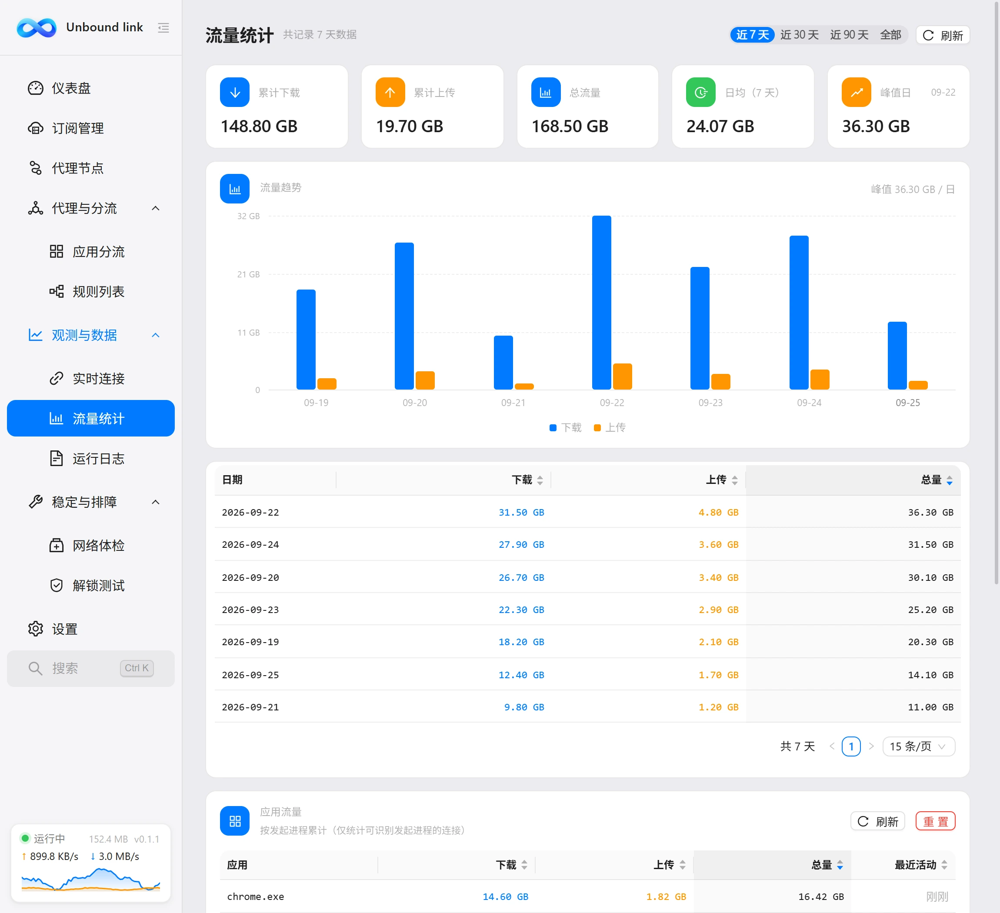
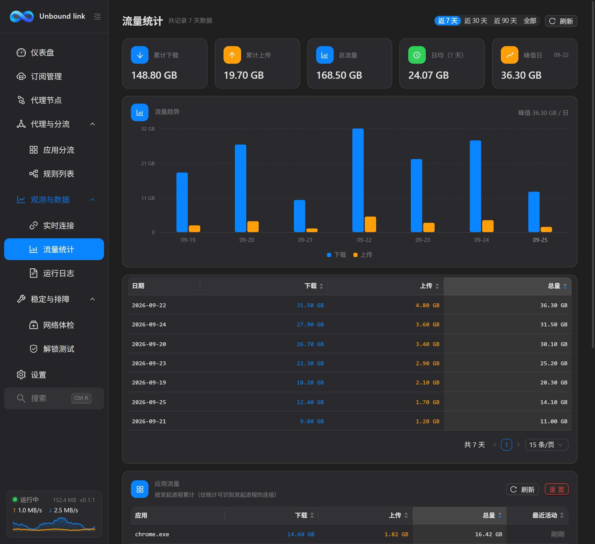

流量统计
流量统计页按天记录本机经过内核的上下行流量，用来回顾一段时间内的用量趋势。


这一页解决什么
它回答「这些天用了多少流量」。所有数据都来自本机内核，不由任何服务器收集，你看到的就是这台电脑的实际用量。
选择时间范围
页面顶部可以在四个时间范围之间切换：
- 近 7 天——看最近一周的用量。
- 近 30 天——看最近一个月的用量。
- 近 90 天——看最近三个月的用量。
- 全部——展示已记录的全部历史。
切换范围后，下方的图表与表格会同步更新。范围越短，趋势越清晰；范围越长，越适合看总体规模。日常自查用「近 7 天」就够了，想了解长期用量再用「近 30 天」或「近 90 天」。范围切换只影响展示，不会删除任何历史数据。
看什么、怎么看
页面用趋势图加明细表格两种方式同时呈现：趋势图看曲线的起伏，一眼分辨哪几天流量偏高；明细表格给出每一天的准确数值。表格共四列：
| 列 | 含义 |
|---|---|
| 日期 | 该行数据对应的那一天。 |
| 下载 | 当天接收的总流量。 |
| 上传 | 当天发送的总流量。 |
| 总量 | 当天上下行合计。 |
如果当前范围内还没有任何记录，页面会显示「当前范围内暂无记录」。此时把时间范围放宽，或使用软件一段时间后再回来查看即可。
按应用看流量
页面底部还有一块应用流量面板：它把流量按发起进程归集，让你看出这段时间里哪个应用最占带宽。表格共五列：应用、下载、上传、总量与最近活动时间，默认按总量从高到低排序。
数据由客户端在内核运行后每 15 秒采样一次连接记录并累计，只统计能识别出发起进程的连接；刚启动软件时列表可能为空，稍候即可。累计值持久保存，重启软件不会清零。想重新开始统计时，点面板右上角的「重置」即可清零所有应用的累计流量，重置不影响「按天记录」的数据。
按节点流量
「应用流量」面板下方还有一块按节点流量面板：它把流量按连接最终走出的「出口节点」归集，直连流量记为 DIRECT 单独一行，方便对比「走代理」与「不走代理」各用了多少。表格共五列：节点、下载、上传、总量与最近活动时间，默认按总量从高到低排序。
数据同样由客户端在内核运行后每 15 秒采样一次并累计，重启软件不会丢失；点面板右上角的「重置统计」可清零全部节点统计，不影响「按天记录」与「应用流量」的数据。
数据存在哪里
数据由客户端在运行期间持续记录，并落盘到数据目录：按天记录写入 traffic_history.json，应用流量写入 app_traffic.json，节点流量写入 node_traffic.json。因此重启软件后历史仍然保留，不会因为退出而丢失。这些文件都由客户端自动维护，你不需要手动编辑。
只有走内核的流量才会被计入。直连且未经过内核的流量不计入，所以统计值可能小于网卡实际用量。
按天记录没有独立的清空按钮，可用「设置 → 维护 → 备份与恢复」的导入备份功能间接覆盖；应用流量与节点流量的累计值可分别在对应面板右上角重置。